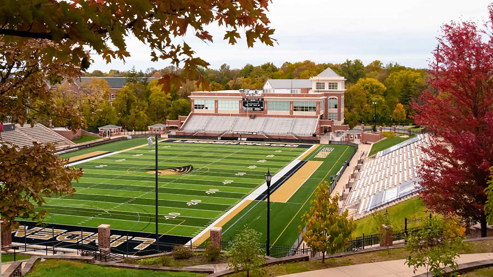
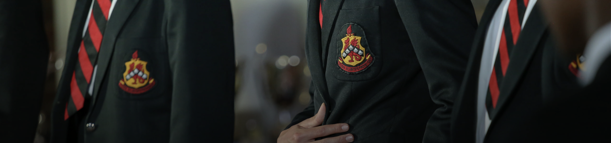
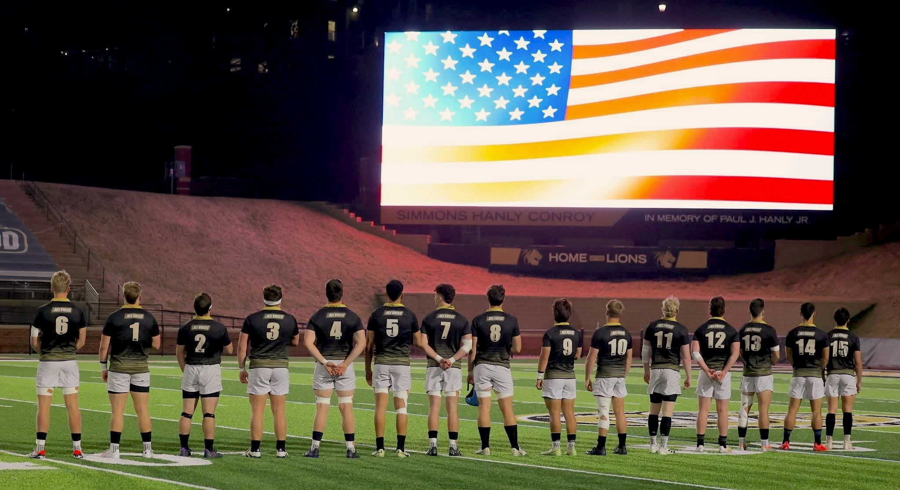

Contents
About Me
Introduction
- I am passionate about Artificial Intelligence tech and its impact on the future of our society.
- I am a curious person who always seeks out to meet new people with different interests.
- I love being active and competitive, be it on the sports field or in the office : I want to grow!
- I love to travel and explore different parts of the world.
Over the past few years, I’ve developed an extensive skill set to prepare for a future career in the tech industry. In particular, I’ve had some professional experience in data science, mathematics, sports, and project management.
Education
Lindenwood University
Bachelor of Science in Data Science, 2021 - 2025
Bachelor of Science in Mathematics, 2021 - 2025
Studying Data Science and Mathematics at Lindenwood University was a challenging but incredibly rewarding experience. Completing my double major gave me a strong foundation in data analysis, problem-solving, and technology. I took courses in machine learning, linear regression, data structures, and computer science, all of which deepened my understanding of how data shapes the world around us.
Kingswood College 2019
Head of Boarding
School Prefect
I attended Kingswood College, one of the top high schools in the country, renowned for its world-class education under the IEB system. Ranked 35 in the world. Moving away from home to join this prestigious boarding school was a transformative experience that equipped me with invaluable life skills and leadership qualities. In 2019, I was honored to serve as Head of Boarding, leading over 60 boys and managing the daily operations of the dormitory. Additionally, I was elected as a school prefect by the student body, reflecting the trust and responsibility placed in me. Beyond leadership, I earned Colours for sports and actively contributed to several committees, further enriching my high school journey
College Athlete
Lindenwood University Lions Rugby
Captain 2023-2025
All Conference Team 2022,2023,2024
Collegiate Rugby Player of the week (CRAA-D1A)
Being a college athlete on Lindenwood’s third-ranked Division One rugby team was one of the most impactful experiences of my life. I joined the program in the fall of 2021 and instantly fell in love with the culture, the energy, and the deep sense of connection within the team. With over 94 players, including teammates from more than 18 different countries, I had the opportunity to build friendships and learn from a diverse range of perspectives. Throughout my time on the team, we won multiple national titles in both 15s and sevens, pushing each other to the highest level of competition.
In my junior year, I was honored to be named captain, a role that taught me invaluable leadership skills. Leading such a large and diverse group required me to develop strong communication, adaptability, and the ability to unite people toward a common goal over an extended season that lasted more than a year. Balancing the demands of being a student-athlete was no easy task, especially while completing a double major. I had to master time management, prioritization, and discipline to excel both on the field and in the classroom. This experience shaped me into a stronger leader and reinforced my ability to perform under pressure while fostering teamwork and excellence.
About the Companies I Have Worked For
Lindenwood University Athletics Department - LPC Program
The LPC (Lindenwood Performance Center) Program at Lindenwood University focuses on optimizing athlete performance across all sports.
- Plans to expand its reach to every team.
- Offers cutting-edge training and assessment tools to enhance athletic development for university sports teams like baseball, softball, basketball, and more.
- Builds integrated websites for each team, delivering insightful data feedback that gives teams an upper hand in training and on match day.
- Utilizes advanced technology to monitor athlete performance metrics.
- Data helps coaches and athletes improve training strategies, enhance recovery, prevent injuries, and optimize performance.
- Data analysis on key metrics to find trends and correlations.
- Build specialized game charters.

BSN Sports
BSN SPORTS is a leading American company specializing in sporting goods distribution.
- Established in 1972.
- $1.5 billion in revenue.
- Serves more than 100,000 educational institutions across the United States.
- Employs over 2,500 dedicated professionals.
- Operates multiple strategically located factories for efficient production and distribution.
- Boasts an extensive network of registered schools, colleges, and universities as customers.

Blaauwboshkuil Farm
A local farm contributing to the community.
- Produces over 18,000 chickens every 8 weeks.
- Raises 600 lambs every 8 months.
- Focuses on high-quality, humane farming practices.
- Supplies to Companies: Hopson & Co, Noorsveld Chickens, and SPAR.
- Sells locally to support the community.
- Adheres to strict standards and ethical farming methods.
- Commitment to sustainability and animal welfare.
- Renowned for premium-quality, tender poultry and lamb.

Kinross Wolaroi School
Kinross Wolaroi School in Australia provides exceptional education and boarding experience for 1100 students.
- Boarding house fosters an inclusive environment, a sense of family for a diverse student body.
- Committed staff provide 24/7 support & guide students for well-being & progress.
- Boarders get customized academic support and guidance to excel in their studies and achieve their full potential.
- Boarding offers vast co-curriculars for all-round student growth.
- Modern boarding facilities offer comfortable and conducive living spaces for students.
- Develops life skills and independence, readying students for future challenges.
St Patrick's College
St. Patrick's College Ballarat provides a caring and welcoming boarding house for 1400 students.
- The boarding house provides a secure and nurturing setting with attentive house parents and round-the-clock monitoring.
- Boarding community promotes strong bonds & belonging among diverse students.
- Boarders get customized academic assistance and mentorship, aiding their academic achievement.
- Boarding house offers co-curriculars for student growth.
- Students learn life skills for higher education and adulthood.
- Promotes cultural exchange, fostering diversity appreciation and respect.